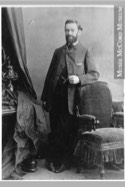
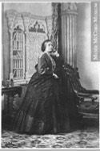

Beaubien-Perrault-Benington - Family Card
Beaubien-Perrault-Benington - Family Card
Julien Perrault , fils(19 Oct 1793 - 3 Feb 1846)Marc Damase Masson(23 Feb 1805 - 23 Apr 1878)
M. Sophie Gauvin(12 Dec 1802 - 18 May 1877)M. Louise Virginie Jobin(7 Jul 1812 - 3 Jan 1885)
m. 8 Feb 1854, Montréal, Québec

b. 1 Aug 1828, Montréal, Québec
d. 9 Aug 1903, Montréal, Québec
br. 12 Aug 1903, Cimetière Côte-des-Neiges, Montréal, Québec
occ. architecte
edu.
rel.
Flags. Perrault, To Do

b. 20 Apr 1835, Beauharnois, Québec
d. 16 Jan 1884, Montréal, Québec
br.
occ.
edu.
rel.
Flags. Perrault
Children
Damase Maurice Perrault(17 Jul 1855 - 21 Jun 1856)
Jean Julien Maurice Perrault(12 Jun 1857 - 11 Feb 1909)
Marie Sophie Virginie Perrault(5 Mar 1859 - 3 Jul 1859)
Marie Emélie Joséphine Perrault(2 Mar 1860 - 16 May 1932)
Marie Joseph Perrault(23 May 1862 - 7 Apr 1863)
Marie Louise Léocadie Perrault(16 Mar 1864 - 26 Jul 1917)
> Joseph Ovide Perrault(2 Feb 1866 - 19 Sep 1923)
Marie Charles Perrault(12 Nov 1867 - 10 Dec 1868)
Léandre Georges Perrault(9 Jul 1869 - 24 Aug 1869)
Émélie Hortense Perrault(12 Jun 1870 - 8 Sep 1870)
Eliza Hortense Perrault(19 Nov 1871 - Mar 1959)
M. Georgine Perrault(1873 - 1873)
M. Emélie Perrault(7 Jun 1874 - 7 Jun 1875)
Joseph Hector Perrault(26 Feb 1876 - 1 Jan 1950)
M. Sophie Alice Perrault(14 Jul 1877 - 1 Aug 1877)